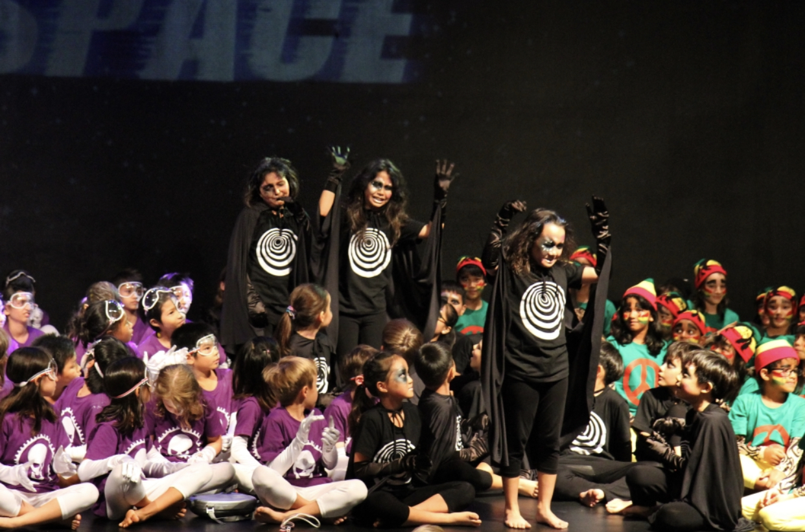
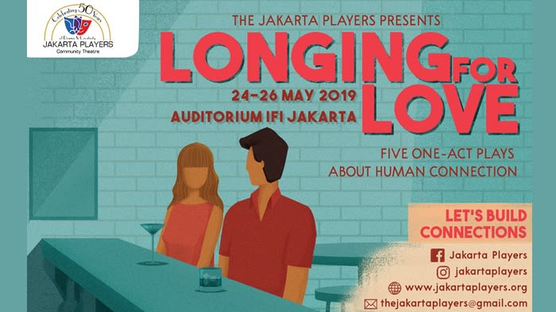

Shriya
For as long as I can remember I had a particular love for creative arts. Whenever I had the opportunity, you could see me on a stage doing something or the other. The smiles I would see on people's faces, knowing it was me who put it there always drove me to do more. Through elementary school and the first half of middle school I was thriving. I was always seeking places to sing, roles to take over and portray, I was having the time of my life.
It wasn't until the 8th grade I was hit with a reality check. Succeeding in a field like this one is no where near easy. If I didn't "make it" I would be stuck singing in small bars and restoraunts, desperately attempting to earn somewhat of a living. Just the thought of it broke me, so after a while I slowly stopped. I stopped singing, I didn't take part in school plays either. It wasn't until my freshmen year when I picked myself up and got myself going. I shouldn't let a photoshopped image of the future decide if I should continue to do what I'm passionate about. If I want to become successful, I won't see any hope unless I put in the hard work. I was accepted into the High School Advanced Choir, I did a play with a local theatre group called Jakarta players and even created a yotube channel. The future is no where near what I'm thinking about. All I know is that I will work as hard as a person can to achieve my dreams and succeed, no matter what it takes.



Acting with Jakarta Players


In may of 2019 I played a role in one of 5 short plays that were part of a production called "Longing for love," hosted by the insanely talented Jakarta Players. I was introduced to Jakarta Players by my dad when he took me for a surprise audition a couple months prior. After the performance in May, I was invitied to take part in a play reading for an event called "Hear us Out." Also hosted by Jakarta Players, Hear us Out was a panel discussion focusing on mental health, social inclusion and sexual abuse. This event took place in July.